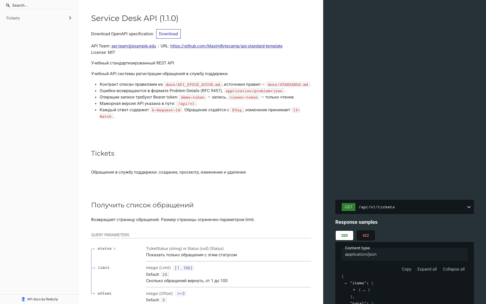

Справочник «Стандартизация HTTP API» · модуль 7 · Репозиторий API
Глава 7.3
Опубликованная
документация
Документация, которая живёт только на локальном порту, не документация: клиент не может её открыть. Разберём, как описание превращается в сайт — с ReDoc, страницами видов ошибок и автоматической выкладкой при каждом изменении контракта.
«Ссылка на документацию должна работать у того, кто никогда не запускал ваш сервис.»
- Категория
- Репозиторий
- Уровень
- Средний
- Связанные главы
- 3.4 Swagger UI и ReDoc · 4.1 Problem Details · 6.4 CI
- Зачем это знать
- Чтобы контракт был доступен клиенту без вашего участия
§1Три способа отдать документацию
| Способ | Кому доступно | Когда годится |
|---|---|---|
/docs и /redoc у запущенного сервиса | Тому, кто дотянулся до сервиса по сети | Разработка, внутренний контур |
Файл openapi.yaml в репозитории | Тому, у кого есть доступ к репозиторию | Инструменты, сравнение версий, ревью |
| Статический сайт документации | Всем, у кого есть ссылка | Публичный или межкомандный API |
Третий способ нужен потому, что первые два требуют доступа, которого у читателя может не быть. Статический сайт не нуждается ни в запущенном сервисе, ни в правах на репозиторий: это обычные HTML-страницы.
Есть и вторая причина, специфическая для нашего контракта. Поле type в Problem Details содержит адрес, по которому RFC 9457 требует открывать документацию о виде проблемы. Пока страницы не опубликованы, это требование не выполнено — ссылка ведёт в никуда.
§2Сборка страницы ReDoc
ReDoc из главы 3.4 умеет работать не только в браузере у запущенного сервиса: та же документация собирается в один самодостаточный HTML-файл.
- name: Build ReDoc page
run: npx --yes @redocly/cli@2 build-docs openapi/openapi.yaml --output site/index.htmlsite/index.html. Всё нужное внутри: ни сервера, ни сборщика для показа не требуется.index.html@redocly/cli@2. То же правило, что и в главах 3.4, 5.2 и 6.2.предсказуемость§3Страницы видов ошибок
Второй шаг собирает то, чего ReDoc не делает: отдельную страницу для каждого вида проблемы. Их создаёт небольшой скрипт проекта.
Поле type в Problem Details содержит адрес вида https://…/api-standard-template/problems/http-404. RFC 9457 (раздел 3.1.1) требует, чтобы по такому адресу открывалась документация о виде проблемы. Скрипт создаёт site/problems/http-<код>.html для каждого кода, который возвращает API, и копирует openapi.yaml в site/.
PROBLEMS = {
401: ("Authentication required", "Нет заголовка Authorization или токен неизвестен.",
"Передайте действующий токен: Authorization: Bearer <token>."),
412: ("Precondition failed",
"ETag из If-Match не совпадает с текущей версией обращения:"
" его изменили после того, как вы его прочитали.",
"Получите обращение заново, возьмите новый ETag и повторите изменение."),
429: ("Too many requests", "Превышен лимит операций записи для токена.",
"Повторите запрос через число секунд из заголовка Retry-After."),
…
}Семь видов ошибок — 401, 403, 404, 412, 422, 429, 500 — и у каждого три строки: название, когда возникает и что делать. Ровно те три вопроса из главы 4.1.
§4Что на такой странице пишут
Третья строка — самая ценная, и её проще всего написать плохо. Сравните:
- «Предусловие не выполнено.»
- «Запрос отклонён.»
- «Слишком много запросов.»
- «Получите обращение заново, возьмите новый
ETagи повторите изменение.» - «Исправьте поля из массива
errors.» - «Повторите запрос через число секунд из
Retry-After.»
Левый столбец повторяет то, что клиент уже знает из кода ответа. Правый говорит, что делать дальше, — и именно за этим человек перешёл по ссылке из поля type.

problems/http-412. Открывается по адресу из поля type любого ответа 412. Разработчик клиента копирует адрес из ответа в браузер и получает инструкцию — без переписки с командой API.В шаблоне pull request из главы 7.1 есть пункт: «у новых ответов с ошибкой есть страница вида проблемы в scripts/build_docs.py». Это тот случай, когда сборка проверить не может, а человек обязан помнить: новый код ошибки без страницы даёт ссылку в никуда.
§5Выкладка при каждом изменении
Собранные страницы выкладываются автоматически: отдельная сборка docs.yml запускается при каждом изменении основной ветки.
name: Publish docs
on:
push:
branches: [main]
workflow_dispatch:
jobs:
build:
steps:
- uses: actions/checkout@v5
- uses: actions/setup-node@v4
- name: Build ReDoc page
run: npx --yes @redocly/cli@2 build-docs openapi/openapi.yaml --output site/index.html
- name: Build problem type pages
run: python3 scripts/build_docs.py
- uses: actions/upload-pages-artifact@v3
with:
path: site
deploy:
needs: build
steps:
- uses: actions/deploy-pages@v4- Изменение попало в основную ветку — после зелёной сборки контракта и одобрения владельца.
- Собирается ReDoc из описания, которое тестом сверено с кодом.
- Собираются страницы ошибок и копируется
openapi.yaml— чтобы файл можно было скачать по ссылке. - Папка
siteвыкладывается как готовый сайт.
Выкладка отдельной сборкой, а не шагом основной — осознанное решение: у публикации другие права и другой повод для запуска. Сломается публикация — контракт всё равно проверен; сломается проверка — публиковать нечего.
Пункт workflow_dispatch добавляет кнопку ручного запуска. Она нужна редко, но выручает: например, когда правки коснулись только текста страниц ошибок.
§6Права сборки и очередь
permissions:
contents: read
pages: write
id-token: write
concurrency:
group: pages
cancel-in-progress: trueНастройка очереди решает конкретную беду: два изменения подряд запускают две публикации, и порядок их завершения не гарантирован — на сайте может оказаться более старая версия. Группа pages с отменой предыдущей сборки исключает этот случай.
§7Результат

contact раздела info.что опубликовано
typeТри вида содержимого закрывают три разные потребности: человеку — читаемая документация, программе — файл описания, клиенту в момент ошибки — инструкция по конкретной проблеме.
§8Частые ошибки
§9Проверьте себя
- Назовите три способа отдать документацию и скажите, кому доступен каждый.
- Почему для нашего контракта публикация — не удобство, а требование стандарта?
- Что делает
build-docsи почему полученный файл можно открыть без сервера? - Какие три строки описывают каждый вид проблемы и какая из них важнее?
- Почему публикация вынесена в отдельную сборку, а не добавлена шагом в основную?
- Какую беду предотвращает настройка
concurrencyс группойpages?
index.html — ReDocopenapi.yaml — описаниеproblems/http-NNN@redocly/cli@2 build-docsscripts/build_docs.pydeploy-pages@v4названиекогда возникаетчто делатьpages: writeconcurrency: pagesworkflow_dispatchСправочник «Стандартизация HTTP API» · модуль 7 · глава 7.3Макаров Максим Николаевич